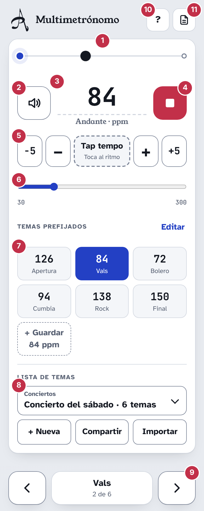
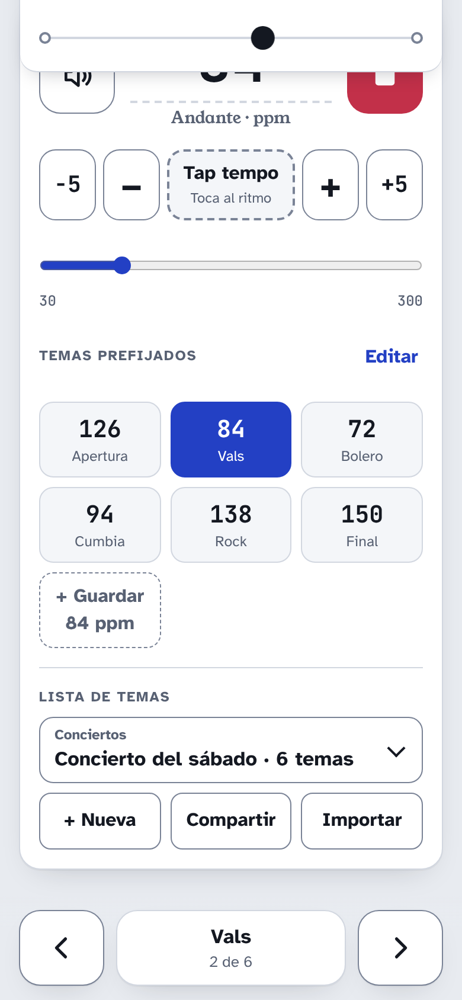
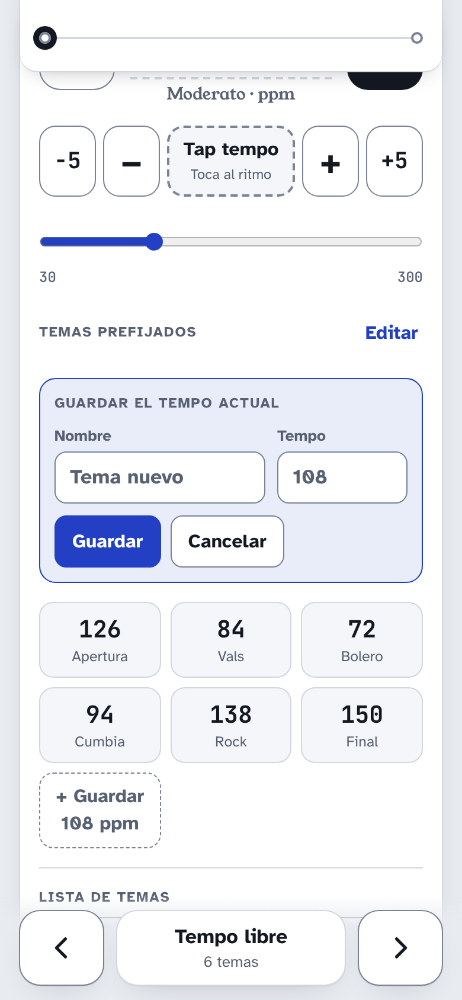
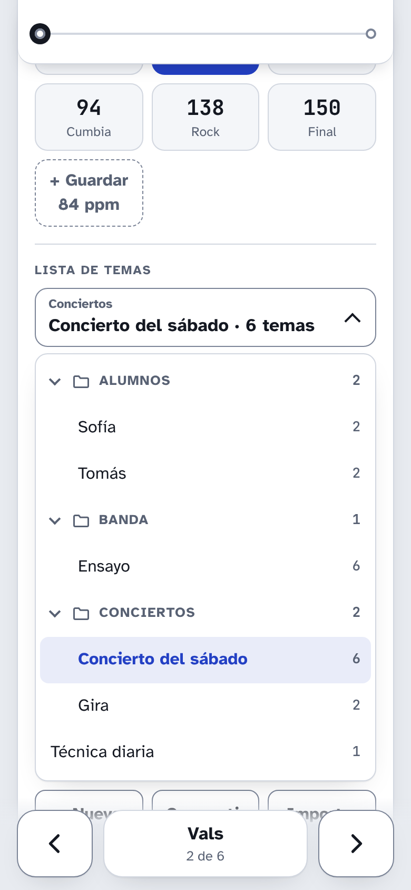
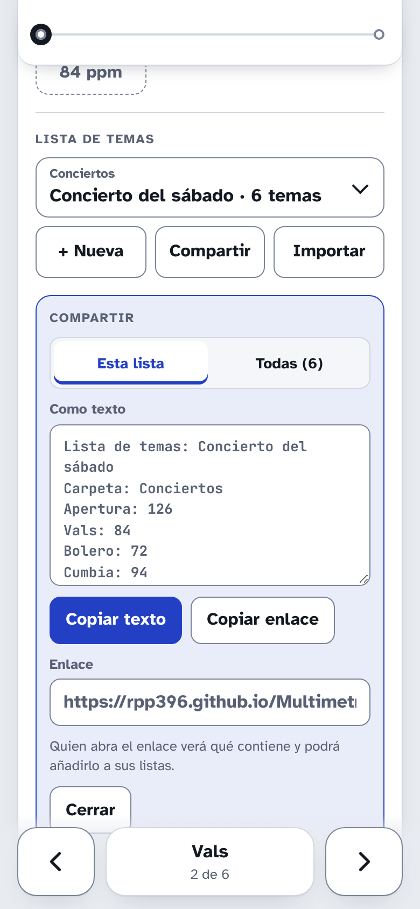
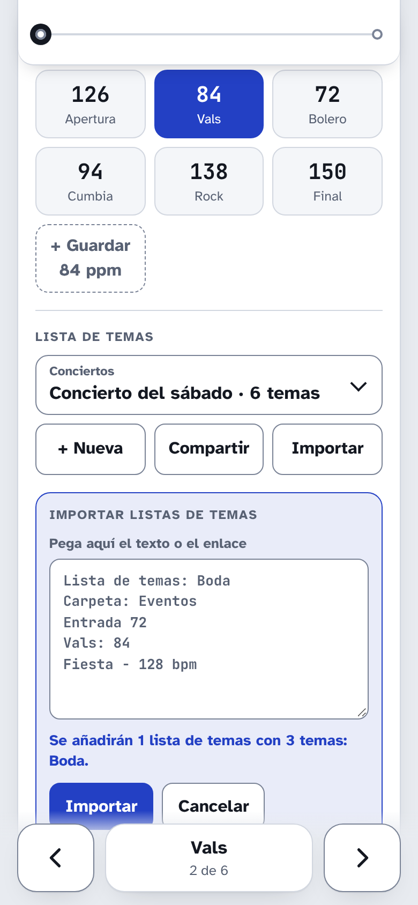

Guía de uso del metrónomo para el celular: el pulso, el tempo, los temas prefijados y las listas de temas.

Todo está en una sola pantalla, en el orden en que se usa:

En cada pulso la pelota llega a un extremo de la línea y se enciende la luz de ese lado. Así, el pulso 1 cae a la izquierda, el 2 a la derecha, el 3 a la izquierda… La pelota va a velocidad constante, de modo que siempre puedes anticipar cuándo llega el siguiente.
Todos los pulsos suenan igual: no hay acento.
Cuando deslizas la pantalla, el indicador queda fijo arriba (con una sombra para separarlo) y la barra con ‹ › queda fija abajo. En la captura de la izquierda la página está desplazada hasta las listas de temas y el pulso sigue a la vista.
El tempo va de 30 a 300 pulsos por minuto. Puedes cambiarlo de varias formas, también con el metrónomo en marcha (el cambio se oye desde el pulso siguiente):
| Control | Qué hace |
|---|---|
| El número | Tócalo, escribe el tempo y pulsa Intro (o toca fuera). |
| − / + | Bajan o suben de 1 en 1. Mantenidos, repiten cada vez más rápido y, al final, de 5 en 5. |
| −5 / +5 | Bajan o suben de 5 en 5. Mantenidos, repiten. |
| Tap tempo | Tócalo al ritmo de la música, 4 veces o más. Desde el segundo toque calcula el tempo con la media de los últimos 8 toques. Si dejas de tocar 2 segundos, la cuenta vuelve a empezar. |
| Deslizante | Arrástralo de lado. Un toque suelto o un gesto hacia arriba o abajo (para desplazar la página) no cambian el tempo, así no lo mueves sin querer. Al arrastrar, el tempo parte del valor que tenía, sin saltar. |
Debajo del número aparece el término italiano aproximado (Adagio, Andante, Allegro…).
Si eliges un tema y después cambias el tempo a mano, abajo pasa a decir «Tempo libre». Entonces ‹ › saltan al tema de tempo más cercano por debajo o por encima.

Ajusta el tempo y toca + Guardar … ppm al final de la grilla. Escribe un nombre (por ejemplo, el del tema) y toca Guardar. Si lo dejas vacío, se llama «Tema 7».
Toca un tema de la grilla para usar su tempo. El elegido se ve en azul.
Los botones ‹ y › de la barra de abajo pasan al tema anterior o al siguiente de la lista. Después del último vuelve al primero. En el medio se ve el nombre del tema y su posición («2 de 6»).
Toca Editar (arriba a la derecha de la grilla). Los temas se marcan con un lápiz; al tocar uno puedes cambiar su nombre o su tempo, moverlo antes o después, o borrarlo (pide un segundo toque para confirmar). Toca Listo para terminar.
Una lista de temas admite hasta 60 temas.

Los temas se guardan en listas de temas: una por concierto, por alumno, por banda o para tu rutina de estudio. Las listas se ordenan en carpetas.
Toca el desplegable Lista de temas. Aparecen las carpetas con sus listas; toca una carpeta para abrirla o cerrarla, y toca una lista para usarla. Las listas sin carpeta van al final. Al cambiar de lista se carga su primer tema.
Toca + Nueva, escribe el nombre y, si quieres, la carpeta. La lista empieza vacía: ajusta un tempo y guárdalo con + Guardar.
Con Editar activo aparecen Nombre y carpeta y Borrar lista. Para mover una lista a otra carpeta, cambia el campo Carpeta: puedes elegir una existente o escribir una nueva. Si la dejas vacía, la lista queda sin carpeta. Una carpeta existe mientras tenga alguna lista.

Toca Compartir y elige Esta lista o Todas. Hay dos formas:
En el celular también puede aparecer Enviar…, que abre el menú de compartir del sistema.
Si el enlace pasa de 2000 caracteres, la app avisa: algunas apps de mensajería cortan los enlaces largos. En ese caso, comparte el texto.
Cada línea con un número entre 30 y 300 es un tema: el número es el tempo y el resto, el nombre. También valen «Vals 84», «Vals - 84 bpm» o «84 Vals». Las líneas que empiezan con # se ignoran. Varias listas van una tras otra, cada una con su línea «Lista de temas:».

Toca Importar y pega el texto o el enlace. Antes de importar, la app dice qué va a añadir, por ejemplo «Se añadirán 1 lista de temas con 3 temas: Boda». Toca Importar para confirmar.
Las listas importadas se añaden a las tuyas; nunca reemplazan nada. Si ya tienes una lista con el mismo nombre, la nueva se llama, por ejemplo, «Boda (2)».
Al abrir un enlace compartido, la app muestra directamente esta vista previa.
Multimetrónomo es una página web que se puede instalar como una app: queda con su ícono en la pantalla de inicio, se abre a pantalla completa y funciona sin conexión después de abrirla una vez con internet.
| Celular | Cómo instalarla |
|---|---|
| Android (Chrome) | Abre la app, toca el menú ⋮ y elige Instalar app o Añadir a pantalla de inicio. |
| iPhone / iPad (Safari) | Abre la app, toca Compartir (el cuadrado con la flecha) y elige Añadir a pantalla de inicio. |
Las actualizaciones se descargan solas la próxima vez que abres la app con conexión.
Comprueba que el altavoz de la app no esté tachado y que el volumen del celular esté alto. En iPhone la app suena aunque el interruptor de silencio esté activado (en iOS 17 o posterior); en versiones anteriores, desactívalo. Si recibiste una llamada, vuelve a tocar ▶.
Con auriculares Bluetooth el sonido llega con algo de retraso. La app lo compensa cuando el navegador informa de ese retraso; si aun así se nota, usa auriculares con cable o el altavoz.
Algunos navegadores no permiten mantenerla encendida. Sube el tiempo de bloqueo de pantalla en los ajustes del celular mientras tocas.
El deslizante ya solo responde al arrastre de lado. Los demás controles necesitan un toque: si ocurre, revisa que no estés tocando − / + al desplazar.
Algunas apps cortan los enlaces largos. Pide que te manden el texto y pégalo en Importar; también puedes pegar ahí el enlace.
Solo en tu navegador, en este celular. La app no envía nada a ningún servidor. Para pasarlos a otro dispositivo, comparte Todas las listas como texto e impórtalo allí.
Con el botón ? de la cabecera.